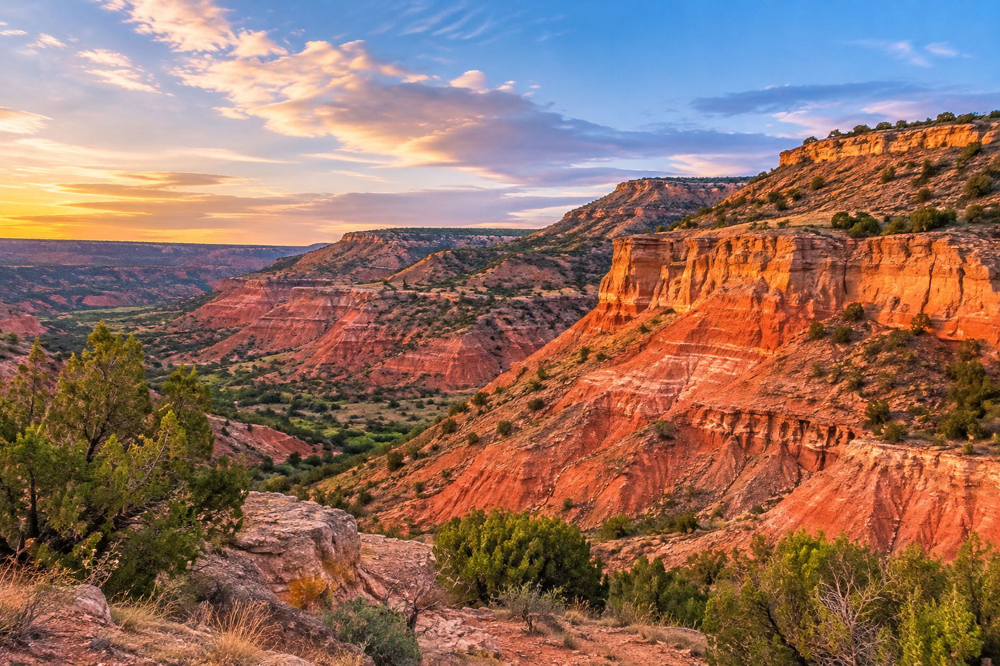
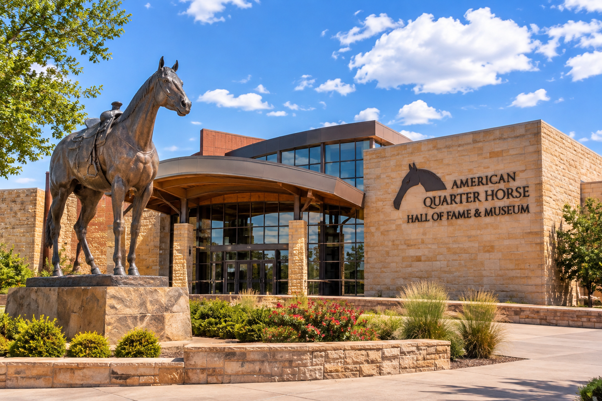

Special Events and Local Attractions
WonderStay Bed & Breakfast offers a comfortable place to stay while exploring the activities and attractions of Amarillo, Texas. Whether you enjoy outdoor adventures, local art, or western history, there are plenty of ways to make your weekend memorable.
Explore Palo Duro Canyon
Visit Palo Duro Canyon State Park for hiking, biking, horseback riding, and scenic views. The canyon provides opportunities for outdoor adventure and photography. During the summer, visitors may also enjoy the TEXAS Outdoor Musical.

Visit Cadillac Ranch
Cadillac Ranch is a unique outdoor art attraction featuring vintage cars buried nose-first in the ground. Visitors can take pictures and contribute their own artwork with spray paint. It is a memorable stop for anyone exploring Amarillo.
Discover Western History
The American Quarter Horse Hall of Fame & Museum gives visitors an opportunity to learn about the history and importance of the American Quarter Horse. Explore exhibits, western artwork, and displays celebrating the breed and its history.

Seasonal Activities
Amarillo offers different experiences throughout the year. Guests can enjoy outdoor activities during warmer months and explore museums, local shops, and indoor attractions when the weather is colder.
- Spring: Enjoy outdoor walks, sightseeing, and the changing scenery around the Texas Panhandle.
- Summer: Explore canyon trails and look for seasonal performances and local events.
- Fall: Take scenic drives and enjoy comfortable weather for outdoor activities.
- Winter: Visit museums, explore local shops, and enjoy a relaxing weekend indoors.
WonderStay Weekend Getaway Package
Make your visit extra special with the WonderStay Weekend Getaway Package. Guests can enjoy a relaxing overnight stay, a morning breakfast, and suggestions for exploring nearby attractions. This package is a great way to experience Amarillo while enjoying the comfort of WonderStay.
Plan Your Visit
For room reservations or questions about planning your weekend getaway, please visit our Contact Page. We look forward to welcoming you to WonderStay Bed & Breakfast!